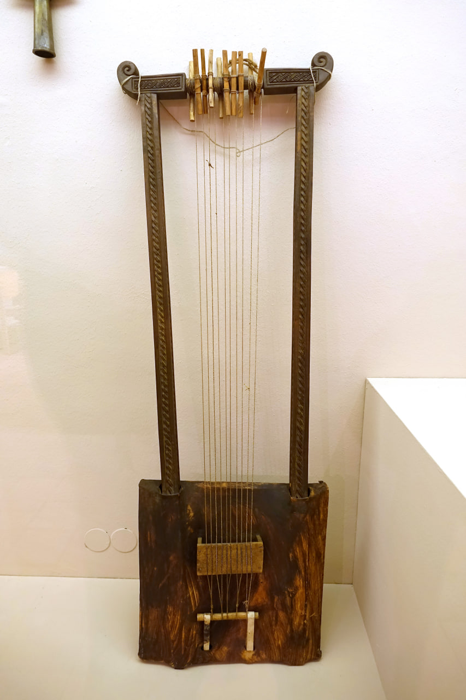
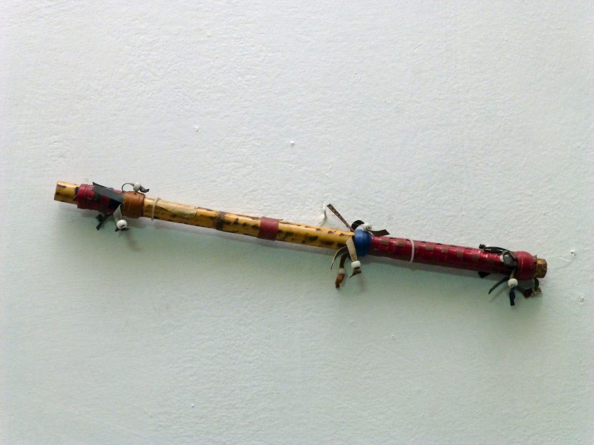

Introduction
Ethiopia has a rich musical tradition. Its instruments have distinct shapes, sounds, and playing techniques, and they are part of celebrations, religious ceremonies, and everyday performances.
This page introduces six traditional instruments: Krar, Masinko, Washint, Kebero, Begena, and Embilta.
Comparing the Instruments
| Instrument | Type | Main Feature |
|---|---|---|
| Krar | String | Five or six strings |
| Masinko | String | One string, played with a bow |
| Washint | Wind | Traditional bamboo flute |
| Kebero | Percussion | Double-headed drum |
| Begena | String | Traditional ten-string lyre |
| Embilta | Wind | Long pipe |
| Total Instruments | 6 | |
How Each Instrument Is Played
- Krar: Plucked with the fingers or a pick.
- Masinko: Played with a bow while the player presses the string to change the note.
- Washint: Played by blowing air across the opening of the flute.
- Kebero: Played by striking the drumhead with the hands.
- Begena: Played by plucking the strings to play traditional melodies.
- Embilta: Played by blowing air into the pipe to produce notes.
Photographs




Culture and Tradition
These instruments are part of Ethiopia's cultural identity. They help keep musical traditions alive and pass them from one generation to the next.
The begena is linked to spiritual reflection, while the kebero keeps the rhythm in religious ceremonies and celebrations.